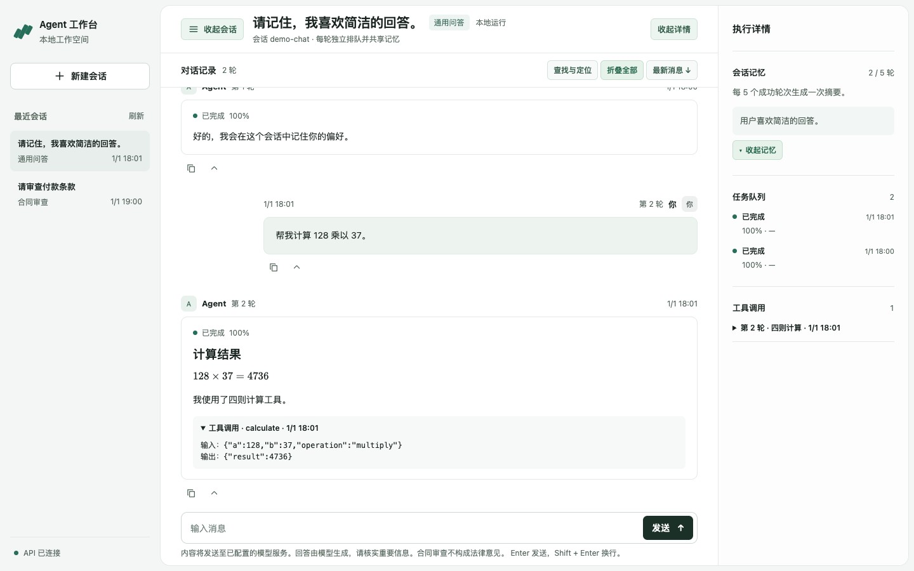
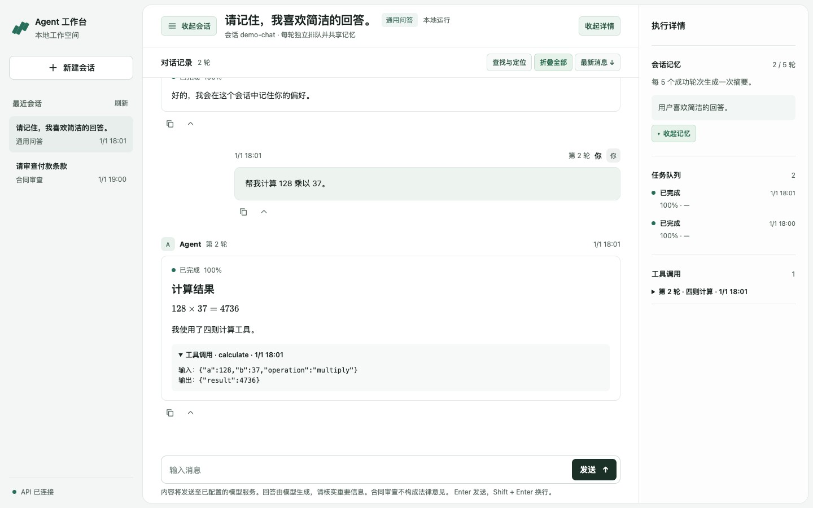
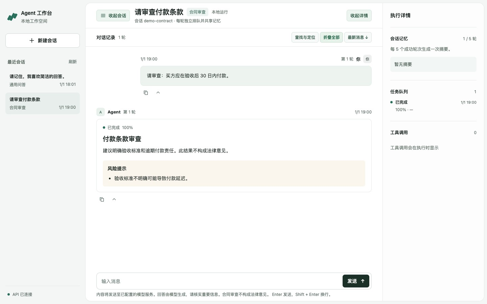

Keep talking.
Keep context.
LoopHarbor is an open-source agent workspace for asynchronous tasks, multi-turn memory, and tools you can actually inspect.
Explore on GitHub See how it works
More than
one prompt.
Keep asking. LoopHarbor connects each turn to the same session, so your agent has context to work with instead of starting from scratch.
Each request gets its own task ID. Continue with the same thread ID: turns in a session run in order, while separate sessions can run in parallel.
See the work.
See the context.
A workspace for conversations, task status, memory, and tool events. Find your place in a long thread, collapse what you don't need, and make room for what matters.

Read comfortably.
Markdown, code, tables, and mathematical expressions render in the conversation. Search by message, turn, or heading.
Follow the trail.
Expand tool calls, check task status, or fold messages and memory down to a useful preview.
Make space.
Hide the side panels to focus on the conversation. On smaller screens they become drawers.
Memory that
moves with you.
Return to a session and continue where you left off. Each session processes its turns in order; memory summaries help carry context forward.
By default, the model summarizes after five successful turns. Sessions, checkpoints, and task records are stored in PostgreSQL. Failed turns are not added to memory.
Chat. Review.
Continue.
Ask a general question or start a contract-review session. Both modes support follow-up turns and visible tool activity.
What can the agent do?
It can use arithmetic and worker-local date and time tools, then continue its response. A configured OpenAI-compatible model with tool calling is required.
A note on contract review
Review output is for reference only and is not legal advice. Verify important conclusions with a qualified professional.

From code
to conversation.
Run the stack locally, connect your model, then open the workspace. The repository has complete platform-specific commands and multi-turn API examples.
Read the setup guide ↗- Start the infrastructureUse Docker Compose for Redis and PostgreSQL; install dependencies in a Python 3.12 environment.
- Configure your modelAdd the provider endpoint, model name, and API key to your local .env. Tool calling must be supported.
- Start API and workerLaunch FastAPI and a Celery worker. On macOS, the README recommends the solo pool.
- Continue the conversationOpen the local workspace or use the API. Reuse the thread ID for follow-up turns.
Good to know.
What do I need to run it?
Python 3.12, Docker and Docker Compose, and a configured OpenAI-compatible model provider that supports tools and tool calls. Follow the setup instructions in the repository.
Is everything offline?
No. The workspace runs locally, but model inputs are sent to your configured provider. Review its privacy and data-use terms before submitting sensitive information.
Can I expose it to the internet?
Not as-is. The API and UI have no authentication and are intended for local use only. Other local processes may still access them.
What language is the interface in?
The current workspace, prompts, error messages, and memory summaries are in Chinese. Documentation is available in Chinese, English, Japanese, and German.
What happens if a task fails?
A model configuration error or failed request marks the task as failed rather than silently switching to a local fallback. Later turns can continue, but the failed turn is not added to memory.
Pick up the thread.
Explore the code, run your own workspace, and see where the next conversation takes you.